Race screen — 2026-09-24 · updated 15:07
M2 P&L −£4.000 won, 2 lost · 20 to run · 1 not backed (price outside 3.5–8)
£2 per M2 priced 3.5–8 at the off (BSP; SP until BSP comes in next morning) · loser −£2 · winner £2 × (BSP − 1) less 5% commission
Order: each race is in market order (shortest forecast price first). A gold
◆ 1/2/3 marks your data model's top 3 — a gold pick at a
longer price is where your data disagrees with the market (a value spot for your eye).
Badges by the name: M2 Market #2 — 2nd favourite in the morning forecast, qualifying race; back only if the live price is 3.5–8.0 ★ EYE finished last run strongly (+score) ⚠ hard trk easy→hard track step-up (−score) ▼ easy trk recently placed at much tougher track (+score) ⚠ draw badly drawn here (−score) ⚠ pace run-style fights the course pace bias (−score) ⚠ ground has tried this going but never placed on it (−score) ▼ cls dropping in class today (+score) ▲ cls rising in class today (−score) ▼ in money in vs opening show ▲ drift drifting vs opening show ⚠ 2 runs / IRE form too little / foreign form to read.
OR column: ↑ green arrow = BHA rating rising (improving horse); ↓ orange = rating falling. TF column: Timeform stars 1–5 (★★★★★ = top rated).
Suit column: going✓ / trip✓ / trk✓ (track toughness) / draw✓ (well drawn).
Rest: green Crse = won there; yellow comment = trouble in running; greyed = novice/bumper or non-handicap 5–6f sprint (left out of the tally — handicap sprints now shown at full opacity). Res fills in after racing (winner green; ✓ = winner came from the top-3 market rows, ◆ = one of your gold data picks won); Spd is a rough home figure; BSP fills in the next morning.
Badges by the name: M2 Market #2 — 2nd favourite in the morning forecast, qualifying race; back only if the live price is 3.5–8.0 ★ EYE finished last run strongly (+score) ⚠ hard trk easy→hard track step-up (−score) ▼ easy trk recently placed at much tougher track (+score) ⚠ draw badly drawn here (−score) ⚠ pace run-style fights the course pace bias (−score) ⚠ ground has tried this going but never placed on it (−score) ▼ cls dropping in class today (+score) ▲ cls rising in class today (−score) ▼ in money in vs opening show ▲ drift drifting vs opening show ⚠ 2 runs / IRE form too little / foreign form to read.
OR column: ↑ green arrow = BHA rating rising (improving horse); ↓ orange = rating falling. TF column: Timeform stars 1–5 (★★★★★ = top rated).
Suit column: going✓ / trip✓ / trk✓ (track toughness) / draw✓ (well drawn).
Rest: green Crse = won there; yellow comment = trouble in running; greyed = novice/bumper or non-handicap 5–6f sprint (left out of the tally — handicap sprints now shown at full opacity). Res fills in after racing (winner green; ✓ = winner came from the top-3 market rows, ◆ = one of your gold data picks won); Spd is a rough home figure; BSP fills in the next morning.
Winner in the market top 3: 1/20 (5%) · in your gold data top 3: 1/20 (5%) — greyed novice / sprint races excluded
⚠ limited form — likely skip
| Res | Horse | Price | BSP | Dr | Form | Crse | Suit | OR | Spd | TF | Last comment |
|---|---|---|---|---|---|---|---|---|---|---|---|
| 3 |  Code Of Honour Code Of Honour | 2.38 | - | 1 | unraced | - | |||||
| 7 | 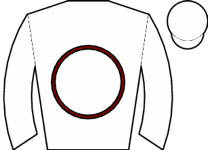 Hamrin | 4.00 | - | 7 | unraced | - | |||||
| 1 |  Netherstream ◆ 3 Netherstream ◆ 3 | 4.33 | - | 5 | 3-5 | 1r 1p | trk✓ | 88 | Edged left start, prominent, pushed along over 1f out, kept on same pace | ||
| 2 | Sydney Carton ◆ 1 ▲ cls | 8.00 | - | 2 | 3-14-7-3 | trk✓ | 76 | 91 | ★★★☆☆ | Held up in rear, shaken up and headway over 1f out, challenged final furlong, kept on | |
| 4 |  Del Pearo ◆ 2 ▲ cls Del Pearo ◆ 2 ▲ cls | 13.00 | - | 6 | 6-4 | 91 | Held up in rear, drifted left and jumped path after 1f, pushed along over 3f out, ridden o | ||||
| 5 | 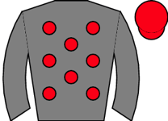 Epistle ★ EYE ▲ cls | 26.00 | - | 3 | 6 | 88 | Edged right and slowly into stride, in rear, switched right towards stands side after 1f, | ||||
| 6 |  Lead The Squad ▼ cls Lead The Squad ▼ cls | 67.00 | - | 4 | 8-7 | 90 |
| Res | Horse | Price | BSP | Dr | Form | Crse | Suit | OR | Spd | TF | Last comment |
|---|---|---|---|---|---|---|---|---|---|---|---|
| 6 | Bear On The Run ⚠ IRE form | 3.50 | - | 10 | 5-1-1 | trip✓ | 89 | - | ★★★★★ | Mid-division, ridden and progress 1 1/2f out, 3rd 1f out, ran on between horses to lead la | |
| 4 | Lady Roxby M2 ⚠ ground ▲ cls | 5.50 | - | 5 | 7-7-7-9-2-2 | 1r | trip✓ trk✓ | 80 | 98 | ★★★★☆ | In touch with leaders, took second over 1f out, pestered winner inside final furlong, no e |
| 3 | 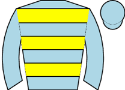 Woohoo ◆ 3 ▲ cls | 6.00 | - | 9 | 2-2-2-2-2-6 | going✓ trip✓ trk✓ | 78 ↑ | 97 | ★★★☆☆ | Led, pushed along 2f out, headed narrowly approaching final furlong, faded 110yds out | |
| 8 | 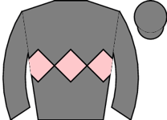 Miss Nightcap ◆ 1 ▼ cls | 9.00 | - | 6 | 2-2-1-1-10 | trip✓ trk✓ | 88 | 92 | ★★★★☆ | Wore hood to post, prominent, ridden and lost position over 1f out, soon weakened quickly | |
| 2 | 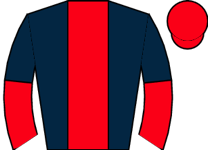 Eternal Sunshine ◆ 2 | 11.00 | - | 4 | 2-6-16-2-1-18 | going✓ trk✓ | 87 ↑ | 96 | ★★★☆☆ | Wore hood to post, midfield near side group, ridden 2f out, weakened over 1f out | |
| 10 |  Mubasimah Mubasimah | 11.00 | - | 8 | 6-15-5-23-7-6 | 2r | 93 ↓ | 89 | ★★☆☆☆ | Wore hood to post, led, pushed along and headed 2f out, soon weakened | |
| 1 | 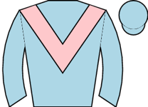 Zooming ⚠ ground | 13.00 | - | 1 | 2-1-5-7-27-9 | 1r 1W | trip✓ trk✓ | 94 | 95 | ★★☆☆☆ | Mid-division, pushed along over 2f out, soon ridden and no extra |
| 9 | 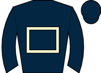 Powdering ▲ cls | 15.00 | - | 2 | 14-1-3-7-3-7 | 3r 1W | trip✓ trk✓ | 79 | 97 | ★★★☆☆ | Taken down early, in touch with leaders, outpaced and dropped towards rear over 2f out, we |
| 5 | 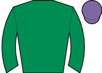 Zooella | 15.00 | - | 7 | 2-3-4-1-1-18 | trip✓ trk✓ | 78 ↑ | 89 | ★★★☆☆ | Midfield, outpaced and drifted right 2f out, weakened quickly inside final furlong, droppe | |
| 7 | 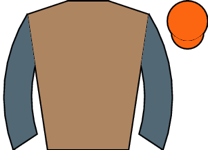 Betty Clover ▲ cls | 15.00 | - | 3 | 5-4-23-6-6-15 | 1r | 89 ↓ | 93 | ★☆☆☆☆ | Mounted chute, raced near side, prominent, ridden over 2f out, soon weakened |
⚠ 5f–6f sprint (non-handicap) — judge live
| Res | Horse | Price | BSP | Dr | Form | Crse | Suit | OR | Spd | TF | Last comment |
|---|---|---|---|---|---|---|---|---|---|---|---|
| 3 | 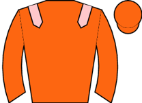 Lazurite ▲ cls | 5.00 | - | 7 | 2-7-1 | 1r 1p | trip✓ trk✓ | 85 | 94 | ★★★★★ | Wore hood to post, made all, unchallenged, comfortably |
| 1 | 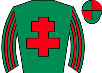 Harry Knows ◆ 1 ★ EYE ▼ cls | 5.50 | - | 4 | 4-2-2-1-3-3 | trk✓ | 90 | 95 | ★★★☆☆ | In touch, pushed along 2f out, steady headway and went third over 1f out, kept on inside f | |
| 2 |  Black Velvet Boy ◆ 3 ▲ cls Black Velvet Boy ◆ 3 ▲ cls | 7.00 | - | 6 | 7-3-1-1-2 | trip✓ trk✓ | 83 | 95 | ★★★★☆ | Close up, pushed along well over 1f out, pressed leader and ridden 1f out, stayed on until | |
| 5 | 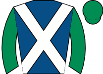 Not My Type ◆ 2 ▼ cls | 8.00 | - | 2 | 1-1-5 | trip✓ trk✓ | 84 | 95 | ★★★☆☆ | Led, ridden and headed over 2f out, weakened over 1f out | |
| 10 |  Minzelle ▼ cls Minzelle ▼ cls | 9.00 | - | 1 | 3-1-6 | trip✓ trk✓ | 82 | 94 | ★★★★☆ | ||
| 11 | 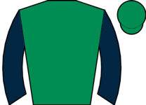 Beauty Box ▲ cls | 9.00 | - | 10 | 4-2-1-8-1 | 2r | going✓ trip✓ trk✓ | 81 | 91 | ★★★☆☆ | Prominent, asked for effort over 1f out, led final furlong, ran on |
| 4 |  Glamorize ▼ cls Glamorize ▼ cls | 11.00 | - | 9 | 2-13-1-1-7 | 1r | trip✓ trk✓ | 88 | 93 | ★★★☆☆ | Prominent, pushed along over 1f out, weakened inside final 110yds |
| 7 |  Envision ▲ cls Envision ▲ cls | 13.00 | - | 8 | 4-1-22-8-4 | trip✓ | 79 | 94 | ★★☆☆☆ | Chased leader, ridden and challenging over 1f out, lost second well inside final furlong, | |
| 8 | 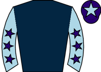 Jaijai | 15.00 | - | 5 | 6-2-1-2-16-4 | trip✓ trk✓ | 82 | 91 | ★★☆☆☆ | Wore hood to post, led, ridden and headed over 1f out, weakened inside final furlong | |
| 9 | 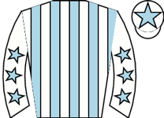 Valdoro ▲ cls | 15.00 | - | 3 | 6-3-4 | 78 | 92 | ★★☆☆☆ | Led, shaken up and headed over 2f out, lost second over 1f out, weakened inside final furl | ||
| 6 | 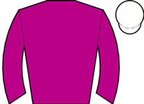 Napa ▼ cls | 17.00 | - | 11 | 4-1-8-7 | 1r 1W | trip✓ trk✓ | 90 | 92 | ★★★☆☆ | Towards rear, struggling over 3f out, hung right and beaten over 2f out, tailed off |
| Res | Horse | Price | BSP | Dr | Form | Crse | Suit | OR | Spd | TF | Last comment |
|---|---|---|---|---|---|---|---|---|---|---|---|
| 0 | 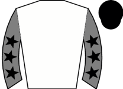 Great Balls O'Fire ◆ 1 ★ EYE ▲ cls | 4.00 | - | 6 | 1 | 1r 1W | going✓ trk✓ | 93 | Wore hood to post, held up in rear, shaken up over 2f out, steady headway over 1f out, dri | ||
| 3 | Mezzo Forte ◆ 3 M2 ▲ cls | 5.00 | - | 5 | 5-1 | trip✓ trk✓ | 95 | Made all, pushed along 2f out, stretched away final furlong, readily | |||
| 0 | 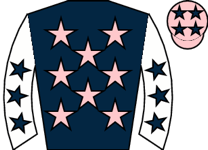 Jimtrott ★ EYE ▲ cls | 7.50 | - | 3 | 2-2-1 | trip✓ | 92 | 92 | ★★★☆☆ | Raced in centre, made all, shaken up and extended lead over 1f out, lead reduced towards f | |
| 1 |  Fuel The Jet ★ EYE ▲ cls Fuel The Jet ★ EYE ▲ cls | 7.50 | - | 7 | 5-1-9-1 | trip✓ trk✓ | 90 | 94 | ★★★☆☆ | Midfield, ridden and headway 2f out, led 1f out, ran on well | |
| 4 | 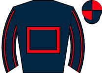 Varzi ◆ 2 | 8.00 | - | 9 | 2-1-5 | trk✓ | 96 | 96 | ★★★★☆ | Prominent, ridden to briefly lead 2f out, faded inside final furlong | |
| 0 | 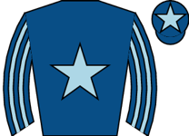 Sontsivka ★ EYE ▲ cls | 9.00 | - | 4 | 2-1 | 1r 1p | trip✓ trk✓ | 83 | 93 | Front rank, pushed along over 2f out, ridden and went second over 1f out, led 1f out, kept | |
| 2 |  Notable Dream Notable Dream | 11.00 | - | 1 | 3-1-6 | 1r | trip✓ trk✓ | 95 | 90 | ★★☆☆☆ | Edged left leaving stalls, took keen hold, chased leaders, ridden 2f out, carried left ove |
| 0 |  Undiscovered ▲ cls Undiscovered ▲ cls | 13.00 | - | 2 | 1-1-6-5 | trip✓ trk✓ | 90 | 92 | ★★★☆☆ | In rear, ridden and headway 2f out, no extra final furlong | |
| 0 | 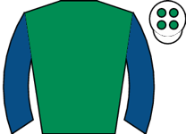 Cilician ▲ cls | 13.00 | - | 8 | 11-2-2-8-4-2 | trip✓ trk✓ | 86 | 91 | ★★☆☆☆ | Held up in rear, still going okay over 2f out, made good headway over 1f out, in second an |
| Res | Horse | Price | BSP | Dr | Form | Crse | Suit | OR | Spd | TF | Last comment |
|---|---|---|---|---|---|---|---|---|---|---|---|
| 0 |  Gregory ◆ 1 Gregory ◆ 1 | 2.00 | - | 9 | 3-7-3-3-5-1 | trk✓ | 113 | 97 | ★★★★★ | Tracked leader in second, pushed along and led over 2f out, soon ridden along, challenged | |
| 0 | Arabian Force M2 | 3.75 | - | 6 | 3-3-2-3-3-6 | trk✓ | 108 | 84 | ★★★★☆ | Held up in 5th, ridden in 5th 2 1/2f out, soon weakened | |
| 0 | 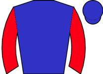 Goblet Of Fire ▲ cls | 13.00 | - | 4 | 1-5-5-1-3-2 | 3r 1W | going✓ trip✓ trk✓ | 94 | 81 | ★★★☆☆ | Tracked leading pair, shaken up and made headway over 2f out, ridden to lead over 1f out, |
| 0 |  Burdett Road ⚠ ground ▲ cls Burdett Road ⚠ ground ▲ cls | 13.00 | - | 7 | 3-7-10-6-11-7 | 1r | 97 ↓ | 96 | ★★★☆☆ | Wore red hood to post, led, pushed along 3f out, ridden and headed 2f out, faded final fur | |
| 0 | Magnetude ◆ 2 | 15.00 | - | 2 | 1-2-1-8-2-6 | 1r 1p | going✓ trk✓ | 94 ↑ | 91 | ★★★★☆ | Wore hood to post, led, ridden and headed over 2f out, weakened over 1f out |
| 0 |  Orchard Keeper ◆ 3 Orchard Keeper ◆ 3 | 17.00 | - | 5 | 3-2-4-4-5-5 | 2r 1p | trk✓ | 93 ↑ | 94 | ★★☆☆☆ | Slowly into stride, towards rear, pushed along over 3f out, ran on same pace over 1f out, |
| 0 | 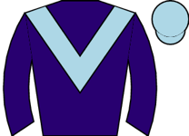 Spirit Mixer ▲ cls | 17.00 | - | 10 | 4-3-10-19-10-6 | 1r | trk✓ | 90 ↓ | 86 | ★★★☆☆ | Chased leaders early, midfield after 1f, pushed along over 2f out, switched right and ridd |
| 0 | 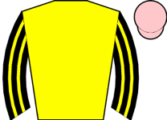 Kelly Burn ★ EYE ▲ cls | 26.00 | - | 8 | 5-2-1-5-1-1 | trk✓ | 78 ↑ | 83 | ★★☆☆☆ | Wore hood to post, keen in midfield, not much room and bumped over 2f out, switched left f | |
| 0 | 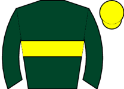 Pinatique ▲ cls | 26.00 | - | 1 | 6-9-6-12-4-3 | trk✓ | 86 | 91 | ★★☆☆☆ | Mid-division, improved over 3f out, led over 2f out and pushed along, ridden and headed ov | |
| 0 |  Peace Belle Peace Belle | 34.00 | - | 3 | 3-15-4-4-2-5 | trk✓ | 100 | 91 | ★★☆☆☆ | Wore hood to post, took keen hold, held up in midfield, ridden over 2f out, soon briefly c |
| Res | Horse | Price | BSP | Dr | Form | Crse | Suit | OR | Spd | TF | Last comment |
|---|---|---|---|---|---|---|---|---|---|---|---|
| 0 | 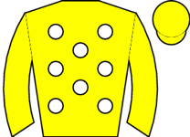 King Of Berkshire ◆ 2 | 3.00 | - | 8 | 3-1-3-4-2-1 | going✓ trip✓ trk✓ | 80 ↑ | 91 | ★★★★★ | Made all, pushed along over 2f out, ridden and pulled clear of rivals over 1f out, forged | |
| 0 |  Charles Darnay ◆ 1 M2 ★ EYE Charles Darnay ◆ 1 M2 ★ EYE | 6.00 | - | 5 | 5-3-1-1 | trip✓ trk✓ | 83 | 93 | ★★★★☆ | Wore hood to post, led, headed after 1f, ridden over 2f out, chased leader entering final | |
| 0 | 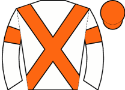 Zurna M2 | 6.00 | - | 3 | 9-7-2-1-1 | 2r 1W | trip✓ trk✓ | 81 | 78 | ★★★☆☆ | In touch in rear, headway and going okay 3f out, ridden 2f out, kept on entering final fur |
| 0 | 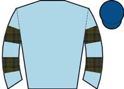 Astracornus ▼ cls | 7.50 | - | 9 | 10-6-6-1-2-4 | trk✓ | 74 | 89 | ★★★★☆ | Prominent, shaken up 3f out, ridden and headway 2f out, outpaced over 1f out, plugged on s | |
| 0 | First Officer ◆ 3 ★ EYE ▼ cls | 9.00 | - | 4 | 3-5-2-2-4-2 | 4r 3p | trip✓ trk✓ | 77 | 89 | ★★★★☆ | Took keen hold, prominent, ridden 3f out, soon outpaced and lost position, rallied enterin |
| 0 |  La Peregrina ⚠ ground ▲ cls La Peregrina ⚠ ground ▲ cls | 9.00 | - | 6 | 5-12-1-2-1-3 | trip✓ trk✓ | 73 ↑ | 91 | ★★★☆☆ | In rear and outpaced early, pushed along 4f out, ridden and briefly disputed second over 1 | |
| 0 | 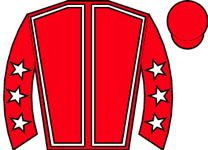 Masterinthewoods ▼ cls | 13.00 | - | 1 | 7-1-2-2-2-8 | going✓ trip✓ trk✓ | 81 ↑ | 91 | ★★★☆☆ | Led, ridden and headed 2f out, weakened 1f out | |
| 0 |  Mr Freedom ▼ cls Mr Freedom ▼ cls | 21.00 | - | 2 | 3---3-5-8-5 | trk✓ | 75 ↓ | 95 | ★★★☆☆ | Prominent, ridden 2f out, weakened 1f out | |
| 0 | 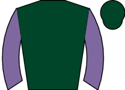 Double Meaning | 21.00 | - | 7 | 2-4-5-3-5-- | 2r 1p | trk✓ | 77 | 88 | ★★★☆☆ | Held up in rear, struggling and tailed off over 4f out, soon pulled up, bled from nose |
| Res | Horse | Price | BSP | Dr | Form | Crse | Suit | OR | Spd | TF | Last comment |
|---|---|---|---|---|---|---|---|---|---|---|---|
| 0 | 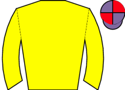 A La Noche ★ EYE | 4.00 | - | 11 | 6-5-6-9-1 | trip✓ trk✓ | 74 | 92 | ★★★★☆ | Wore hood to post, took keen hold, prominent, ridden to lead over 2f out, kept on well fin | |
| 0 | 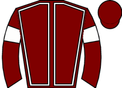 Potomac River M2 | 7.00 | - | 9 | 6-7-6-4-3-2 | 2r 1p | trip✓ trk✓ | 71 ↓ | 94 | ★★★☆☆ | Wore red hood to post, led early, soon headed, settled handy, pushed along 2f out, led nar |
| 0 | 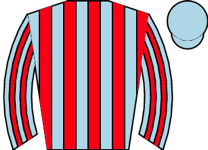 Born A Rebel | 7.50 | - | 2 | 11-2-4-3-2-3 | 4r 3p | trip✓ trk✓ | 66 | 91 | ★★★☆☆ | Wore hood to start, towards rear near side, pushed along 1f out, headway inside final furl |
| 0 | 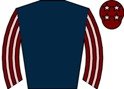 Media Legend | 7.50 | - | 6 | 5-2-3-5-3-4 | trk✓ | 74 | 92 | ★★★★☆ | Midfield, nudged along over 3f out, ridden over 2f out, headway over 1f out, well held tow | |
| 0 |  Signcastle City ▼ cls Signcastle City ▼ cls | 9.00 | - | 3 | 2-3-2-5-4-3 | trip✓ trk✓ | 72 | 94 | ★★★★★ | Wore hood to post, slowly away, towards rear, headway to be in touch with leaders before h | |
| 0 |  Ecclefechan ◆ 3 ▼ cls Ecclefechan ◆ 3 ▼ cls | 13.00 | - | 13 | 6-5-3-1-1-7 | 1r | trip✓ trk✓ | 75 | 90 | ★★★☆☆ | Towards rear, outpaced and struggling 2f out, outpaced inside final furlong, kept on one p |
| 0 |  Eloquencia Eloquencia | 13.00 | - | 10 | 3-2-2-1-4 | 1r 1p | going✓ trk✓ | 71 | 85 | ★★★☆☆ | Tracked leaders, pushed along over 3f out, soon dropped away tamely |
| 0 |  Berry Clever Berry Clever | 13.00 | - | 5 | 5-4-4-4-4-4 | 69 ↓ | 98 | ★★★☆☆ | Held up in rear, going okay 2f out, ridden and in touch with leaders entering final furlon | ||
| 0 | Cancan In The Rain ▼ cls | 13.00 | - | 12 | 4-4-4-8-3-10 | 1r 1p | trk✓ | 75 | 84 | ★★★☆☆ | Towards rear, steady headway over 2f out, ridden along and weakened over 1f out |
| 0 |  Warning Symbol ◆ 1 ⚠ ground Warning Symbol ◆ 1 ⚠ ground | 15.00 | - | 1 | 5-10-3-1-- | trip✓ trk✓ | 74 | 94 | ★★★★☆ | Wore hood to post, prominent, ridden 2f out, soon eased and pulled up | |
| 0 |  King Of Charm King Of Charm | 15.00 | - | 8 | 8-10-6-2-1-7 | 2r 1W | trip✓ trk✓ | 62 | 88 | ★★☆☆☆ | Steadied start, in rear, pushed along on outside over 2f out, no impression |
| 0 | 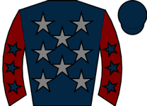 Royal Bodyguard | 17.00 | - | 4 | 3-6-4-2-1-10 | 2r 1W | going✓ trip✓ trk✓ | 72 | 91 | Took keen hold in touch, shaken up and progress when bumped rival over 1f out, weakened fi | |
| 0 | Souffler ◆ 2 ▼ cls | 26.00 | - | 7 | 7-6-1-6-6 | 2r 1W | going✓ trk✓ | 75 | 91 | ★★☆☆☆ | Wore hood to post, edged left start, took keen hold in rear, ridden along 3f out, weakened |
⚠ limited form — likely skip
| Res | Horse | Price | BSP | Dr | Form | Crse | Suit | OR | Spd | TF | Last comment |
|---|---|---|---|---|---|---|---|---|---|---|---|
| 2 | 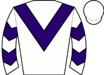 Biglesisback | 3.25 | - | 3-2-2-2---3 | 1r 1p | going✓ trk✓ | 104 | 66 | ★★★★☆ | Midfield, ridden and outpaced before 3 out, kept on same pace and left in third approachin | |
| 3 | Poetic Twist ◆ 2 | 3.50 | - | 2-2-2-1-2-6 | trk✓ | 108 | - | ★★★★★ | Mid-division, jumped left 1st, towards rear when not fluent next, tracked leaders 3rd, 6th | ||
| 4 | 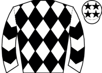 Kingside Lady ◆ 3 ★ EYE | 4.00 | - | 13-1 | - | Tracked leader, 2nd before 6th, left in lead after 3 out, not fluent 2 out, increased lead | |||||
| 1 |  Datstheholyallofit ◆ 1 ★ EYE Datstheholyallofit ◆ 1 ★ EYE | 5.50 | - | 4-4-1-2-3-1 | trk✓ | 102 | 69 | ★★★★☆ | Travelled strongly, chased leader, in touch with leader 2 out, soon led and went clear, sl | ||
| 5 | 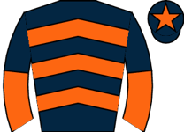 Sky Blue Ribbon ▲ cls | 13.00 | - | 4 | 73 | Tracked leader, led 4f out, pushed along over 2f out, headed well over 1f out and bumped, |
⚠ limited form — likely skip
| Res | Horse | Price | BSP | Dr | Form | Crse | Suit | OR | Spd | TF | Last comment |
|---|---|---|---|---|---|---|---|---|---|---|---|
| 2 |  Tamarind Bay ◆ 1 ★ EYE ▼ cls Tamarind Bay ◆ 1 ★ EYE ▼ cls | 2.38 | - | 2-3-1-1---1 | 1r | going✓ trip✓ trk✓ | 137 ↑ | 81 | ★★★★☆ | Prominent, led 3 out, pushed along before last, ran on well | |
| 0 | 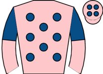 Walking On A Dream ◆ 3 | 4.50 | - | --3-2-8-1-2 | 1r 1p | going✓ trip✓ trk✓ | 118 ↑ | 52 | ★★★★☆ | Led, joined 4 out, ridden along after 3 out, headed before last, kept on flat but no match | |
| 3 | 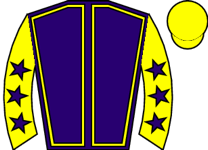 The Last Cloud ◆ 2 ▼ cls | 5.50 | - | 1-4-3-3---6 | 2r 1W | trk✓ | 126 ↑ | 74 | ★★★★★ | Chased clear leaders, mid-division 4 out, weakened before 2 out | |
| 1 | 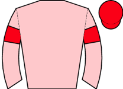 Spectacularsunrise ▼ cls | 7.50 | - | 1-1-2-6-9-6 | going✓ trk✓ | 125 | 57 | ★★★☆☆ | Midfield, raced wide from 7th, outpaced before 3 out, soon tailed off | ||
| 5 |  Sleedagh Sleedagh | 11.00 | - | 2-2-2-3-3-9 | 2r 1p | going✓ trip✓ trk✓ | 116 | 60 | ★★★☆☆ | Not always fluent, chased leader, lost second 10th, ridden and weakened before 2 out | |
| 4 |  Scalpnagoon Scalpnagoon | 13.00 | - | 2-3-4-2-3-5 | 115 ↓ | - | ★★☆☆☆ | Prominent, 3rd after 7th, 4th after 9th, improved to lead 3 out, not fluent 2 out and head |
⚠ limited form — likely skip
| Res | Horse | Price | BSP | Dr | Form | Crse | Suit | OR | Spd | TF | Last comment |
|---|---|---|---|---|---|---|---|---|---|---|---|
| 3 |  Expert Analysis ◆ 1 ★ EYE Expert Analysis ◆ 1 ★ EYE | 2.25 | - | 12-5-9---3-2 | 93 ↑ | 75 | ★★★★★ | Held up in rear, not fluent 2nd, headway to lead 2 out, soon ridden, headed last, rallied | |||
| 2 | 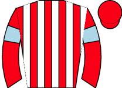 Curious Mrs Fox | 4.50 | - | 3-6-6-4-2-3 | trip✓ trk✓ | 84 ↓ | 59 | ★★★★☆ | Took keen hold, midfield, headway to dispute lead 7th, ridden 2 out, headed approaching la | ||
| 4 | 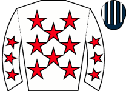 Gonnino | 7.50 | - | 2-6-6-2-4-5 | 1r | going✓ trk✓ | 91 | 58 | ★★★★☆ | Front rank, shaken up after 3 out, ridden next, no extra and faded before last | |
| 5 | 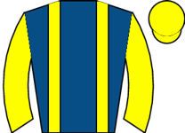 Struth ◆ 2 | 9.00 | - | 5-6-6-6-6-6 | 4r | 89 ↓ | 71 | ★★★☆☆ | Midfield, ridden after 2 out, soon held | ||
| 1 | 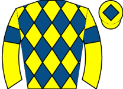 Elemental Eye ◆ 3 ▼ cls | 11.00 | - | 5-3-1-2-7-8 | 1r | trk✓ | 93 ↑ | 69 | ★★★☆☆ | Towards rear, not fluent 4th, mistake 3 out and pushed along, lost touch 2 out | |
| 7 | 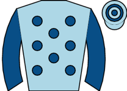 Manhatane ▼ cls | 13.00 | - | 5-6-6 | 78 | 62 | ★★★☆☆ | Mid-division, pushed along after 2 out, dropped away before last | |||
| 8 |  Ribble River ⚠ ground Ribble River ⚠ ground | 15.00 | - | --5-5-6-6-10 | 73 | 57 | ★★★☆☆ | Slowly away, always toward rear, rider said gelding never travelled | |||
| 6 |  Boston Queen Boston Queen | 21.00 | - | 9-9-6-10---- | 81 | - | ★★☆☆☆ | In touch, niggled along in 6th before 8th, lost place and weakened after 4 out, pulled up | |||
| 0 | 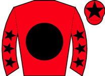 King Gold Boy ⚠ ground | 151.00 | - | 7-----7---- | 2r | 63 | 60 | ★☆☆☆☆ | Always behind, pulled up before 2 out |
| Res | Horse | Price | BSP | Dr | Form | Crse | Suit | OR | Spd | TF | Last comment |
|---|---|---|---|---|---|---|---|---|---|---|---|
| 0 |  Sir Carnegie ◆ 1 ★ EYE Sir Carnegie ◆ 1 ★ EYE | 4.33 | - | 3-1-1-6-5-1 | 3r 2W | going✓ trip✓ trk✓ | 105 ↑ | 71 | ★★★☆☆ | Handy in second, awkward 2nd, led 7th, forged on 13th, pushed along after 3 out, ridden an | |
| 0 | 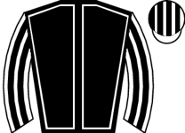 Another High Five M2 ⚠ IRE form | 5.00 | - | 5-2-3-2-2-5 | trk✓ | 105 ↑ | 42 | ★★★★★ | Rear of mid division, progress to track leaders after 3 out, pushed along in 8th entering | ||
| 0 |  Inis Oirr ◆ 2 ▼ cls Inis Oirr ◆ 2 ▼ cls | 5.50 | - | 5-9-1-2-2-3 | 4r 1W | going✓ trip✓ trk✓ | 108 | 45 | ★★★☆☆ | Mid-division, pushed along 14th, plugged on into third run-in, never threatened | |
| 0 | 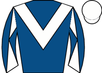 Sean Og ◆ 3 ⚠ ground ▼ cls | 6.00 | - | 7-4-1-4-1-4 | trk✓ | 111 ↑ | 78 | ★★★★☆ | Midfield, not fluent 1st, in touch with leaders when mistake last, ridden over 1f out, fad | ||
| 0 | 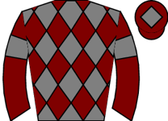 Juke Hill ⚠ IRE form | 8.00 | - | 5-7-8-4-7-4 | 105 | - | ★★★☆☆ | In touch, took closer order after 5th, 3rd after 7th, dropped to 4th and under pressure ap | |||
| 0 |  Wasdell Dundalk Wasdell Dundalk | 11.00 | - | 4-6-4-2---4 | 6r 1p | trk✓ | 110 | 59 | ★★☆☆☆ | In rear, mistake 10th, reminders 13th, pushed along after next and tailed off | |
| 0 |  Upfordebate ⚠ ground ▼ cls Upfordebate ⚠ ground ▼ cls | 11.00 | - | 1-1-5-5-3-8 | 1r | trk✓ | 105 ↑ | 62 | ★★★★☆ | Prominent, pushed along before 4 out, lost position after 4 out, weakened after 3 out | |
| 0 |  Judicial Review ⚠ ground ▲ cls Judicial Review ⚠ ground ▲ cls | 15.00 | - | 7---2-5-7-11 | 1r | trk✓ | 78 ↓ | 66 | ★★☆☆☆ | Prominent, not fluent 3 out, ridden and weakened before 2 out | |
| 0 | Midnight Moonshine ▲ cls ⚠ IRE form | 26.00 | - | 10-9-11-5-6-5 | 1r | 100 | 70 | ★★☆☆☆ | In rear, not fluent 3rd, never a factor |
| Res | Horse | Price | BSP | Dr | Form | Crse | Suit | OR | Spd | TF | Last comment |
|---|---|---|---|---|---|---|---|---|---|---|---|
| 0 | Letterston Lily ★ EYE ▲ cls | 4.00 | - | 4-11-1-8-1-2 | 2r 1W | going✓ trk✓ | 122 ↑ | 77 | Held up in rear, not fluent 3 out, smooth headway 2 out, ridden to chase winner approachin | ||
| 0 | Letterston Lady M2 | 5.50 | - | 4-4-1-3-1-1 | 1r | trk✓ | 119 ↑ | 71 | ★★★★☆ | Close 3rd inside, went 2nd before 6th until 3 out, handy 3rd, squeezed through on inside a | |
| 0 | Divilabother ◆ 1 ★ EYE | 6.50 | - | 6-1-1-1-2-1 | going✓ trk✓ | 128 ↑ | 68 | ★★★☆☆ | Held up in rear, in touch 3 out, going okay and in touch with leader approaching last, soo | ||
| 0 |  Al Sayah Al Sayah | 8.00 | - | 4-1-3-4-1-3 | trip✓ trk✓ | 124 ↑ | 79 | ★★★★★ | Not always fluent, midfield, in touch with leader when not fluent and pecked 3 out, ridden | ||
| 0 | Marsiac | 9.00 | - | 4-1-1-4-10 | going✓ trk✓ | 127 | 84 | ★★★☆☆ | Led, headed 3 out, soon ridden, weakened before 2 out | ||
| 0 | Idem ◆ 3 ▼ cls | 11.00 | - | 2-5-8-2-5-- | going✓ trip✓ trk✓ | 127 | 96 | ★★★☆☆ | Mid-division, not fluent 2nd, ridden and lost place after 10th, pulled up before 3 out | ||
| 0 |  My Chiquita ▲ cls My Chiquita ▲ cls | 11.00 | - | 2-2-3-1-7-4 | trk✓ | 123 | 89 | ★★★☆☆ | Chased leaders, went second before 2 out, pushed along after 2 out, every chance until los | ||
| 0 |  The G Wizard The G Wizard | 15.00 | - | 4-2-2-2-3-9 | 1r | going✓ trk✓ | 112 | 73 | ★★★☆☆ | Midfield, pushed along and dropped to rear after 4 out, outpaced from 3 out, tailed off be | |
| 0 | Lord Accord ◆ 2 ★ EYE | 17.00 | - | 2-4-1-2---3 | going✓ trk✓ | 122 | 83 | ★★☆☆☆ | Prominent, led before 2nd, not fluent 11th, headed 12th, ridden before 4 out, lost positio | ||
| 0 | Spit Spot ⚠ ground ▲ cls | 21.00 | - | 7---6-5---5 | 3r | 106 ↑ | 67 | ★★☆☆☆ | Prominent, pushed along before 2 out, soon beaten | ||
| 0 | Medieval Gold ▲ cls | 26.00 | - | 2-1-3-2-7-9 | 1r | going✓ trk✓ | 114 ↑ | 74 | ★★☆☆☆ | Chased leaders, mid-division by 3rd, pushed along and struggling 3 out | |
| 0 | Lets Mingle ▲ cls | 26.00 | - | --3-5-1-5-7 | 5r 1W | trk✓ | 110 | 69 | ★★☆☆☆ | Mid-division, not fluent 2nd, pushed along after 3 out, weakened after 2 out |
| Res | Horse | Price | BSP | Dr | Form | Crse | Suit | OR | Spd | TF | Last comment |
|---|---|---|---|---|---|---|---|---|---|---|---|
| 0 |  Way Maker ◆ 2 ▼ cls Way Maker ◆ 2 ▼ cls | 5.00 | - | 3-2---3-2-2 | 1r 1p | going✓ trk✓ | 102 | 60 | ★★★★★ | Tendency to jump right, led, not fluent 7th, ridden and reduced advantage 2 out, soon head | |
| 0 | Reflection Of You M2 ▼ cls | 6.00 | - | 3-5-3---1-3 | 3r 2p | going✓ trip✓ trk✓ | 90 | 71 | ★★★☆☆ | Held up in rear, ridden and in touch 3 out, headway 2 out where mistake, chased leaders ap | |
| 0 | Steps In The Sand M2 ⚠ IRE form | 6.00 | - | 4-3-11-4-2-7 | 96 ↑ | - | ★★★☆☆ | Mid-division, 7th at 5th, closed approaching 3 out, 6th 2 out, 7th again and no impression | |||
| 0 | Secret Secret ▼ cls | 7.00 | - | 5-4-5-3-5-3 | trk✓ | 95 | 69 | ★★★☆☆ | Prominent, ridden and lost position before 3 out, outpaced 2 out, some headway approaching | ||
| 0 | Broken Ice ⚠ IRE form | 7.00 | - | 4-8-5-10-3-5 | 1r 1p | trk✓ | 102 ↓ | 107 | ★★★★☆ | Towards rear, 12th after 8th, progress before 3 out, no impression in 5th before last, one | |
| 0 | Maillot Blanc ◆ 3 | 9.00 | - | 2-8-3-2-1-- | 2r 1p | going✓ trip✓ trk✓ | 100 ↑ | 56 | ★★★☆☆ | Close up, dropped away 4 out, pulled up before 2 out | |
| 0 | Wee Alki ◆ 1 ▼ cls | 11.00 | - | --2-2-1-6-- | going✓ trk✓ | 103 ↑ | 61 | ★★★☆☆ | Led, headed before 2nd, slow 2nd, went right 7th, slow and lost position 8th, ridden befor | ||
| 0 | Jetovango ⚠ IRE form | 11.00 | - | 11-10-3-14-3 | 100 | - | ★★★★☆ | Rear of mid-division, 7th before 4 out, headway in 4th after 3 out, closed in 3rd 2 out, n | |||
| 0 |  Dalileo ⚠ ground Dalileo ⚠ ground | 13.00 | - | 7-3-1-1-7-8 | 6r 2W | trip✓ trk✓ | 98 ↑ | 67 | ★★☆☆☆ | Towards rear, mistake 1st, slow 8th and reminder, tailed off 3 out |
| Res | Horse | Price | BSP | Dr | Form | Crse | Suit | OR | Spd | TF | Last comment |
|---|---|---|---|---|---|---|---|---|---|---|---|
| 0 | Forest Spirit ◆ 1 | 5.00 | - | 2-7-4-3-2-2 | 1r 1p | going✓ trip✓ trk✓ | 84 | 70 | Not always fluent, midfield, headway to chase winner 2 out, in touch with winner approachi | ||
| 0 | Tigress Lilly M2 ⚠ ground ▼ cls | 5.50 | - | 10-11-6-6-5-2 | 5r 1p | trip✓ trk✓ | 91 ↓ | 58 | ★★★★★ | Towards rear, hit 5th, closed up 4 out, pushed along after 3 out, disputed third 2 out and | |
| 0 | Takeyoutotheisland ★ EYE | 8.00 | - | 5-4-9-7-7-2 | 1r 1p | going✓ trip✓ trk✓ | 83 | 50 | ★★★☆☆ | Midfield, dropped to rear after 5th, not fluent 6th, outpaced 7th, rallied and made steady | |
| 0 | Am Still Here ◆ 2 | 9.00 | - | 2-2-2-3-2-3 | 1r 1p | going✓ trip✓ trk✓ | 82 ↑ | 56 | ★★★☆☆ | Chased leaders, hit 5th, mistake 8th and reminders, plugged on to take remote 3rd after 2 | |
| 0 |  Gortmore Lady ⚠ IRE form Gortmore Lady ⚠ IRE form | 9.00 | - | --9-3-7-5-4 | 82 ↓ | - | ★★★★☆ | Rear, 16th after 7th, effort and progress before 2 out, headway last, kept on one pace in | |||
| 0 | Malangen ◆ 3 | 13.00 | - | 2---2-8-4-4 | 2r | trip✓ trk✓ | 77 | 89 | ★★★☆☆ | Led and soon clear, bunny-hopped 3 out, reduced lead after 2 out, pushed along and headed | |
| 0 | Asa ⚠ ground | 13.00 | - | 7-6-3-1-3-8 | trk✓ | 99 | 66 | ★★★☆☆ | Not always fluent, held up in rear, in touch 3 out, headway 2 out where slow, ridden and w | ||
| 0 | Beat The Retreat ⚠ ground | 15.00 | - | 8-1-10-1-4-- | 3r | trip✓ trk✓ | 89 ↑ | 48 | ★★★☆☆ | Midfield, dropped to rear after 4th, pushed along 5th, lost touch after 7th, pulled up bef | |
| 0 | On The Bubble | 17.00 | - | 2-10-4-7-8-5 | trk✓ | 81 ↑ | 84 | ★★☆☆☆ | Held up in touch, asked for effort after 2 out, plugged on without threatening | ||
| 0 | Zephlyn ▲ cls | 17.00 | - | 6-4-5---6-7 | 1r | 99 ↓ | 76 | ★★★☆☆ | Tracked leaders, ridden along over 2f out, weakened over 1f out | ||
| 0 | Jet Renegade ⚠ IRE form | 17.00 | - | 3-6-9-5-4-7 | 100 | 73 | ★★☆☆☆ | In rear early, progress to moderate 4th 4 out, no impression before 2 out, weakened from l | |||
| 0 | Prince Nino | 21.00 | - | 5-4-7-8-1-8 | 3r 1W | going✓ trip✓ trk✓ | 80 | 42 | ★★☆☆☆ | Prominent, ridden after 9th, lost position after 3 out, kept on same pace before last | |
| 0 | Chief Sunday ⚠ ground ▼ cls | 21.00 | - | 7-5-6---9-7 | 91 ↓ | 70 | ★★★★☆ | Always behind | |||
| 0 | Burgundy Man | 26.00 | - | --9-----6-5 | 6r | 76 ↓ | 76 | Led, awkward 1st, headed 4th, in touch with leaders 3 out, ridden and lost position 2 out, | |||
| 0 | Jolyjump | 26.00 | - | --4-2-2-4-8 | going✓ trk✓ | 97 | 58 | ★★☆☆☆ | Towards rear, hit 4th, lost touch 2 out | ||
| 0 | Coventry ⚠ ground | 26.00 | - | 8-8-7-3-6-7 | 2r | trk✓ | 80 ↓ | 40 | ★★★☆☆ | Towards rear, some headway after 3 out, outpaced before 2 out, weakened before last |
| Res | Horse | Price | BSP | Dr | Form | Crse | Suit | OR | Spd | TF | Last comment |
|---|---|---|---|---|---|---|---|---|---|---|---|
| 1 |  Albegone ◆ 1 Albegone ◆ 1 | 3.50 | - | 5 | 2-6-5-1-2-9 | trip✓ trk✓ | 60 | 97 | ★★★★★ | Midfield, ridden over 2f out, waiting for room over 1f out, ridden and switched right insi | |
| 7 |  Bust A Moon ◆ 3 M2 ⚠ draw Bust A Moon ◆ 3 M2 ⚠ draw | 5.00 | - | 8 | 6-11-3-5-4-4 | trk✓ | 45 ↓ | 96 | ★★★★☆ | Mounted in chute, went early to post, held up in rear, asked for effort 2f out, headway fi | |
| 8 | Tilsworth Turf | 7.00 | - | 3 | 3-9-10-8-9-3 | trk✓ | 45 | 90 | ★★★☆☆ | Midfield, asked for effort 2f out, progress into third final furlong, stayed on | |
| 6 |  Danger Alert ◆ 2 ⚠ draw Danger Alert ◆ 2 ⚠ draw | 7.50 | - | 7 | 3-4-7-4-9-6 | trk✓ | 59 ↓ | 92 | ★★★☆☆ | Midfield, ridden and outpaced over 1f out, made no telling impression | |
| 5 | Nad Alshiba Snow ★ EYE | 7.50 | - | 2 | 3-5-10-5-5-4 | trk✓ draw✓ | 45 | 93 | ★★☆☆☆ | In touch with leaders, pushed along over 1f out, ridden and outpaced inside final furlong, | |
| 3 | Ziva's Star ⚠ draw | 9.00 | - | 6 | 3-7-6-7-2-8 | 1r | 45 | 90 | ★★☆☆☆ | Towards rear near side, hung right when ridden 1f out, kept on one pace inside final furlo | |
| 2 |  Jojo Rabbit Jojo Rabbit | 11.00 | - | 1 | 8-6-4-10-4-9 | draw✓ | 59 ↓ | 95 | ★★★☆☆ | In touch with leaders, ridden over 2f out, weakened over 1f out | |
| 4 |  Golden Prosperity Golden Prosperity | 13.00 | - | 4 | 3-3-7-2-7-10 | trk✓ | 46 | 89 | ★★★☆☆ | Midfield near side, outpaced inside final furlong, weakened inside final 110yds |
⚠ limited form — likely skip
| Res | Horse | Price | BSP | Dr | Form | Crse | Suit | OR | Spd | TF | Last comment |
|---|---|---|---|---|---|---|---|---|---|---|---|
| 1 | Silverella ◆ 2 ★ EYE ▼ cls | 2.38 | - | 1 | 5-1 | trip✓ draw✓ | 88 | In touch, headway from 3f out, challenged over 1f out, led entering final furlong, kept on | |||
| 2 | Scrappetalene ⚠ draw ▼ cls | 3.50 | - | 8 | 5-3 | 91 | Raced in second, shaken up over 2f out, plugged on same pace inside final furlong | ||||
| 3 |  Rogue Crusader ◆ 1 Rogue Crusader ◆ 1 | 3.75 | - | 5 | 1 | trip✓ | 94 | In touch in mid-division, headway from 2f out, went second just over 1f out, led well insi | |||
| 4 | Astral Crown ◆ 3 | 11.00 | - | 6 | 5-3 | trk✓ | 90 | Chased leader, ridden over 2f out, weakened inside final furlong | |||
| 0 | Majestic Flame ▼ cls | 15.00 | - | 3 | 6-9 | draw✓ | 85 | Held up in rear, outpaced over 2f out, some headway over 1f out, no threat | |||
| 6 | Skies The Spirit ⚠ draw ▼ cls | 34.00 | - | 10 | 6 | 86 | Ducked right leaving stalls, always in rear | ||||
| 9 | Poppular ⚠ draw ▼ cls | 51.00 | - | 9 | 8 | 84 | Slowly away, raced in last, tailed off throughout | ||||
| 7 | Special Operations ▼ cls | 51.00 | - | 2 | 4-10 | draw✓ | 81 | Towards rear, outpaced from over 2f out, weakened over 1f out | |||
| 8 | Distant Sun ⚠ hard trk ⚠ draw ▼ cls | 51.00 | - | 7 | 9 | 73 | Slowly into stride and lost many lengths, in rear, ran green, always outpaced | ||||
| 5 | Meccapulco ⚠ hard trk ▼ cls | 67.00 | - | 4 | 5 | 81 | Slowly away, pushed along in last, lost touch 3f out |
⚠ limited form — likely skip | 5f–6f sprint (non-handicap) — judge live
| Res | Horse | Price | BSP | Dr | Form | Crse | Suit | OR | Spd | TF | Last comment |
|---|---|---|---|---|---|---|---|---|---|---|---|
| 4 |  Iris Olivia ◆ 1 ▼ cls Iris Olivia ◆ 1 ▼ cls | 3.50 | - | 7 | 7-2-3 | trip✓ trk✓ | 77 | 93 | ★★★★☆ | Keen, prominent, shaken up and headway over 1f out, plugged on well inside final furlong, | |
| 6 |  Sayidah Bahra ★ EYE ⚠ draw Sayidah Bahra ★ EYE ⚠ draw | 3.75 | - | 6 | 4 | 91 | Slowly away, in rear, ran green early, came near side to make headway over 2f out, ridden | ||||
| 7 | Bling ⚠ hard trk | 5.50 | - | 3 | 5 | draw✓ | 92 | Raced towards stands side, tracked leaders, outpaced 2f out, no impression after | |||
| 1 | From Afar ⚠ hard trk ▼ cls | 8.00 | - | 1 | 6 | draw✓ | 94 | Held up in rear, ridden over 2f out, kept on same pace final furlong | |||
| 3 | Casting Coach ◆ 2 | 8.50 | - | 9 | unraced | - | |||||
| 5 | Maigue Magic ◆ 3 | 11.00 | - | 2 | unraced | draw✓ | - | ||||
| 2 | Wedyan ⚠ draw | 17.00 | - | 5 | unraced | - | |||||
| 0 | Oxido ★ EYE | 21.00 | - | 8 | 5 | 94 | Midfield, outpaced over 1f out, kept on inside final furlong but not trouble leaders | ||||
| 8 | Alice Inher Palace ⚠ draw | 67.00 | - | 4 | unraced | - |
⚠ 5f–6f sprint (non-handicap) — judge live
| Res | Horse | Price | BSP | Dr | Form | Crse | Suit | OR | Spd | TF | Last comment |
|---|---|---|---|---|---|---|---|---|---|---|---|
| 0 | Captaincy ⚠ hard trk | 3.50 | - | 2 | 3-1 | trip✓ | 81 | 92 | Prominent, pushed along 2f out, headway to lead over 1f out, kept on, always doing enough | ||
| 0 | The Mean Fiddler ◆ 1 ★ EYE | 3.75 | - | 1 | 2-2-1 | 1r 1p | trip✓ trk✓ | 79 | 96 | ★★★★★ | Soon raced in close second, led before halfway, pushed along and briefly headed over 1f ou |
| 0 | Reflect On Glory ◆ 3 | 4.00 | - | 5 | 3-1-5 | trip✓ | 82 | 91 | ★★★☆☆ | Led, set steady pace, pushed a;long 3f out, headed 2f out, outpaced over 1f out, soon weak | |
| 0 |  Diamond New Bay ★ EYE Diamond New Bay ★ EYE | 7.00 | - | 6 | 4-1 | trip✓ | 76 | 90 | Made most, joined and very briefly headed after 2f, pushed along 2f out, faced challenge b | ||
| 0 | Harley ◆ 2 ▼ cls | 8.00 | - | 3 | 5-2-3-2-1-4 | trip✓ trk✓ | 77 | 98 | ★★★☆☆ | Led, headed over 2f out, ridden over 1f out, weakened and outpaced by leading trio inside | |
| 0 |  Lake Muritz ▼ cls Lake Muritz ▼ cls | 15.00 | - | 4 | 2-1-6-5 | trk✓ | 78 | 92 | ★★☆☆☆ | Pressed leader, pushed along over 2f out, weakened approaching final furlong |
| Res | Horse | Price | BSP | Dr | Form | Crse | Suit | OR | Spd | TF | Last comment |
|---|---|---|---|---|---|---|---|---|---|---|---|
| 0 |  Hollywell Stream ◆ 3 ★ EYE Hollywell Stream ◆ 3 ★ EYE | 4.33 | - | 10 | 2-6-2-5-1-2 | trip✓ | 87 | 86 | ★★★★★ | Wore hood to start, slowly away, towards rear, denied clear run over 1f out, ran on well a | |
| 0 | Per Contra M2 ★ EYE ▲ cls | 5.00 | - | 4 | 8-20-4-8-3-1 | trip✓ trk✓ | 82 ↓ | 95 | ★★★★☆ | Midfield, headway from 3f out, disputed lead 1f out, clearly led inside final furlong, ran | |
| 0 | Noble Horizon ◆ 1 ⚠ ground ▼ cls | 6.00 | - | 9 | 8-3-7-1-2-6 | trip✓ | 97 ↑ | 95 | ★★★★☆ | Prominent, pushed along over 2f out, ridden and faded over 1f out | |
| 0 |  Be Patient Be Patient | 7.00 | - | 3 | 3-1-1-2-3 | trip✓ | 85 | 87 | ★★★☆☆ | Held up in rear, ridden 3f out, headway to chase winner 2f out, outpaced and lost second i | |
| 0 | Keep An Eye On It ◆ 2 ▲ cls | 8.00 | - | 6 | 4-5-2-3-1-2 | trk✓ | 76 | 98 | ★★★☆☆ | Towards rear, headway from over 1f out, disputed second inside final furlong, pestered win | |
| 0 | Jez Bomb ⚠ ground | 11.00 | - | 7 | 9-1-2-1-7-5 | 4r 2W | trip✓ trk✓ | 82 ↑ | 94 | ★☆☆☆☆ | In rear, pushed along over 3f out, plugged on, held 1f out |
| 0 | Wahdan | 13.00 | - | 8 | 6-6-3-4-4-7 | 82 ↓ | 95 | ★★☆☆☆ | Dwelt, rear mid-division, checked over 3f out, pushed along well over 1f out, stayed on, n | ||
| 0 | Auld Toon Loon | 13.00 | - | 5 | 1-8-3-7-8-4 | trip✓ | 93 | 91 | ★★★☆☆ | In rear, ridden to make some headway over 1f out, outpaced inside final furlong, weakened | |
| 0 |  Circus Of Rome ▼ cls Circus Of Rome ▼ cls | 21.00 | - | 2 | 4-6-5-11-10-16 | 94 | 92 | ★★☆☆☆ | Steadied towards rear, some progress well over 2f out, pushed along 2f out, no impression | ||
| 0 | Dain Ma Nut In ⚠ ground ▼ cls | 21.00 | - | 1 | 1-7-18-2-16-9 | trip✓ | 97 | 87 | ★★★☆☆ | Wore hood to post, midfield, ridden over 2f out, weakened over 1f out |
| Res | Horse | Price | BSP | Dr | Form | Crse | Suit | OR | Spd | TF | Last comment |
|---|---|---|---|---|---|---|---|---|---|---|---|
| 0 | Thunder Goddess ◆ 1 ★ EYE ▲ cls | 2.38 | - | 1 | 6-4-5-2-2-1 | 1r 1W | going✓ trk✓ | 61 | 94 | ★★★★★ | Held up towards rear, headway on inside from 2f out, led over 1f out, clear inside final f |
| 0 | Jam Lass M2 ★ EYE ▲ cls | 5.50 | - | 2 | 11-1-9-6-7-3 | 1r | 62 | 89 | ★★★★☆ | Dwelt start, soon recovered to chase leaders, switched left and shaken up over 2f out, wen | |
| 0 |  Saratoga Gold ▲ cls Saratoga Gold ▲ cls | 6.50 | - | 5 | 2-3-2-6-6-3 | going✓ | 61 ↓ | 77 | ★★★☆☆ | Towards rear, pushed along and headway 3f out, ridden over 2f out, no impression until sta | |
| 0 | L'Eagle Aid ◆ 2 | 9.00 | - | 6 | 6-3-5-3-3-6 | 70 | 95 | ★★★☆☆ | Slowly into stride, chased along after 1f into midfield, ridden over 3f out, weakened quic | ||
| 0 | Al Fujairah | 9.00 | - | 7 | 4-3-2-5 | 69 | 90 | ★★★★☆ | Held up in rear, pushed along to make some headway towards centre from 1f out, kept on | ||
| 0 | Golden Caviar | 13.00 | - | 4 | 5-5-3-6 | 69 | 84 | ★★☆☆☆ | Midfield, pushed along over 2 out, ridden 1f out, kept on one pace inside final 110yds | ||
| 0 | Mother Dear ◆ 3 ▼ cls | 17.00 | - | 8 | 8-1-5-6 | going✓ | 70 | 88 | ★★☆☆☆ | Always behind | |
| 0 | Long Reign ▼ cls | 21.00 | - | 9 | 25-9-7 | 49 | 80 | ★★☆☆☆ | Midfield, dropped to rear well over 3f out, no impression | ||
| 0 | Angel Breeze ▲ cls | 34.00 | - | 3 | 14-9-3-7 | 49 | 85 | Never better than midfield |
| Res | Horse | Price | BSP | Dr | Form | Crse | Suit | OR | Spd | TF | Last comment |
|---|---|---|---|---|---|---|---|---|---|---|---|
| 0 |  Go Vince Go Go Vince Go | 6.00 | - | 16 | 8-17-4-3-9-3 | 77 ↓ | 93 | ★★★☆☆ | Prominent, pushed along 2f out, chased leaders inside final furlong, no extra towards fini | ||
| 0 | Fiscal Policy ◆ 2 M2 ★ EYE ▲ cls | 7.50 | - | 1 | 17-11-6-3-5-1 | 2r 1W | going✓ trip✓ trk✓ draw✓ | 70 ↓ | 97 | ★★★★☆ | Held up in touch, switched right and closed over 1f out, led inside final furlong, ran on |
| 0 | Woodstock ▼ cls | 8.00 | - | 2 | 6-2-2-4-1-3 | trip✓ draw✓ | 81 ↑ | 95 | ★★★★★ | Slipped and stumbled start, towards rear near side, pushed along 2f out, took third near s | |
| 0 | Arduis Invicta ★ EYE | 9.00 | - | 12 | 6-2-4-17-9-1 | going✓ trip✓ trk✓ | 75 ↓ | 97 | ★★★★☆ | Tracked leaders, pushed along and headway over 1f out, third 1f out and soon disputed lead | |
| 0 | Mister Sox | 9.00 | - | 3 | 2-12-14-5-5-3 | 1r | trip✓ draw✓ | 71 | 97 | ★★★☆☆ | Midfield, ridden 2f out, headway 1f out, challenged final 110yds, held near finish |
| 0 | The Good Biscuit ◆ 1 ⚠ draw ▼ cls | 11.00 | - | 8 | 4-1-1-6-1-5 | 4r 2W | trip✓ trk✓ | 85 ↑ | 97 | ★★★☆☆ | Mid-division, ridden 2f out, no impression |
| 0 | Gold Queen Kindly ◆ 3 ▼ cls | 11.00 | - | 14 | 4-9-11-2-3-4 | trk✓ | 84 ↓ | 92 | ★★☆☆☆ | Raced wide in midfield, headway into second 3f out, shaken up 2f out, led 1f out, headed f | |
| 0 |  Diamont Katie ★ EYE ▲ cls Diamont Katie ★ EYE ▲ cls | 11.00 | - | 15 | 3-4-2-11-2-7 | 1r 1p | going✓ trip✓ trk✓ | 73 | 95 | ★★★☆☆ | In touch with leaders, outpaced and weakening when hampered 2f out, rallied and chased lea |
| 0 |  Big Fun ⚠ ground Big Fun ⚠ ground | 11.00 | - | 5 | 7-4-7-6-2-4 | draw✓ | 78 | 96 | ★★★☆☆ | Tracked leaders, pushed along in third 2f out, ridden and no extra inside final furlong | |
| 0 | Kodiac Thriller ⚠ draw ▼ cls | 17.00 | - | 9 | 10-13-4-1-9-9 | 83 | 92 | ★★☆☆☆ | Midfield, outpaced from 2f out, weakened quickly inside final furlong | ||
| 0 | Alpha Capture | 17.00 | - | 13 | 1-2-10-2-2-11 | going✓ trk✓ | 83 ↑ | 94 | ★★★☆☆ | Rear mid-division, pushed along well over 2f out and improved, ridden well over 1f out, we | |
| 0 | Rare Change ⚠ ground | 17.00 | - | 4 | 9-1-7-7-7-6 | 1r | draw✓ | 80 | 91 | ★★☆☆☆ | Slowly away, towards rear, pushed along over 2f out, never involved |
| 0 | Bell Shot | 26.00 | - | 11 | 3-8-3-4-2-10 | 1r 1p | trip✓ trk✓ | 80 | 92 | ★★☆☆☆ | Pushed along to dispute lead, ridden over 2f out, headed entering final furlong, weakening |
| 0 | Utmost Respect ⚠ draw | 26.00 | - | 6 | 1-14-4-4-20-12 | going✓ | 76 ↓ | 94 | ★★★☆☆ | Wore red hood to post, mid-division, ridden 2f out, no progress | |
| 0 | Gentle George ⚠ draw ⚠ ground ▼ cls | 26.00 | - | 10 | 1-6-10-18-9-9 | trip✓ | 82 ↓ | 91 | ★★☆☆☆ | Prominent, ridden 3f out, weakened from 2f out | |
| 0 |  Stanley Spencer ⚠ draw Stanley Spencer ⚠ draw | 51.00 | - | 7 | 6-3-9-2-10-8 | trip✓ trk✓ | 80 | 96 | ★☆☆☆☆ | Chased leaders, pushed along over 2f out, no impression when hampered well over 1f out, so |
| Res | Horse | Price | BSP | Dr | Form | Crse | Suit | OR | Spd | TF | Last comment |
|---|---|---|---|---|---|---|---|---|---|---|---|
| 0 |  Crowned ◆ 1 ★ EYE Crowned ◆ 1 ★ EYE | 6.50 | - | 12 | 3-4-5-2-2-1 | 1r 1W | going✓ trk✓ draw✓ | 65 | 94 | ★★★☆☆ | Slowly away, towards rear, headway and ridden over 2f out, kept on strongly inside final f |
| 0 |  From Me To You ◆ 3 M2 ★ EYE ⚠ draw From Me To You ◆ 3 M2 ★ EYE ⚠ draw | 7.00 | - | 3 | 6-23-4-10-6-3 | trk✓ | 63 | 93 | ★★★★☆ | Slowly into stride, towards rear, headway 2f out, ridden and stayed on well from over 1f o | |
| 0 |  Bluestone Lady ◆ 2 ★ EYE Bluestone Lady ◆ 2 ★ EYE | 7.50 | - | 5 | 4-2-10-1-4-3 | going✓ trip✓ trk✓ | 63 | 90 | ★★★☆☆ | In rear, switched right soon after start, taken towards centre to make some headway from o | |
| 0 |  Claret And Blues ★ EYE Claret And Blues ★ EYE | 8.00 | - | 7 | 5-3-6-6-5-3 | 1r 1p | trk✓ | 59 | 89 | ★★★★☆ | In rear, pushed along 3f out, ridden and headway over 2f out, switched left over 1f out, n |
| 0 |  No More Pino ★ EYE ⚠ draw No More Pino ★ EYE ⚠ draw | 8.50 | - | 4 | 5-9-6-4-5 | 64 | 92 | ★★★★☆ | Wore hood to post, led, ridden over 1f out, soon kept on well despite sustained pressure, | ||
| 0 | West To Rest ▼ cls | 9.00 | - | 10 | 5-6-3 | trk✓ draw✓ | 61 | 88 | ★★★☆☆ | Handy in second, pushed along 2f out, ridden and no impression over 1f out, lost second to | |
| 0 | Moriarty Moon | 11.00 | - | 14 | 6-7-6-5-4 | draw✓ | 63 | 92 | Wore red hood to post, tracked front pair, pushed along over 2f out, no impression | ||
| 0 | Revoked ⚠ hard trk ▼ cls | 11.00 | - | 9 | 9-5-7 | 64 | 89 | ★★★☆☆ | Wore hood to post, took keen hold, raced centre, midfield, ridden over 2f out, soon lost p | ||
| 0 | Eevee Star | 11.00 | - | 6 | 3-5-5-8-7-4 | 59 | 90 | ★★★★★ | Midfield, ridden 2f out, kept on final 110yds, nearest finish | ||
| 0 | Amantha | 13.00 | - | 13 | 2-3-3-5-1-4 | trip✓ trk✓ draw✓ | 60 | 90 | ★★★☆☆ | In rear, pushed along and headway well over 2f out, ridden in fourth over 1f out, soon wel | |
| 0 | Roberts Legacy ▼ cls | 13.00 | - | 11 | 12-6-4 | draw✓ | 58 | 85 | ★★★☆☆ | Mid-division, pushed along 3f out, headway on inside over 1f out, went fourth inside final | |
| 0 |  Liveadream ⚠ draw ⚠ ground Liveadream ⚠ draw ⚠ ground | 15.00 | - | 1 | 7-4-2-11-5-7 | trip✓ trk✓ | 56 | 92 | ★★★☆☆ | Led, headed over 3f out, ridden to dispute lead 2f out, headed approaching final furlong, | |
| 0 | Lopefernza ⚠ draw ▼ cls | 17.00 | - | 2 | 6-6-7 | 1r | 61 | 88 | ★★★☆☆ | Wore hood to start, midfield, outpaced from 2f out, lost touch inside final furlong | |
| 0 | Greek Street ▼ cls | 34.00 | - | 8 | 5-2-6-6-9 | going✓ | 62 | 89 | ★★☆☆☆ | Dwelt, in rear, pushed along over 2f out, never a factor |
| Res | Horse | Price | BSP | Dr | Form | Crse | Suit | OR | Spd | TF | Last comment |
|---|---|---|---|---|---|---|---|---|---|---|---|
| 0 | Phoenix Of Dreams ⚠ draw | 4.00 | - | 1 | 5-3-1-4-7-3 | 2r 2p | going✓ trip✓ trk✓ | 66 | 93 | ★★★☆☆ | Mid-division, pushed along 2f out, ridden and kept on final furlong, not pace to challenge |
| 0 | Feel The Need ◆ 2 M2 | 5.00 | - | 7 | 2-21-13-6-7-2 | 2r 1p | going✓ trip✓ trk✓ draw✓ | 70 ↓ | 94 | ★★★★☆ | Took keen hold, held up in midfield, going okay 2f out, headway and ridden entering final |
| 0 |  Enpassant M2 ⚠ draw Enpassant M2 ⚠ draw | 5.00 | - | 3 | 1-7-7-1-4-3 | 2r 1W | going✓ trip✓ trk✓ | 66 ↑ | 92 | ★★★☆☆ | Mid-division, pushed along over 1f out, ran on, not quite pace to challenge |
| 0 | Shades Of May ◆ 1 ▲ cls | 7.00 | - | 6 | 1-1-8-3-4-1 | 3r 2W | going✓ trip✓ trk✓ | 61 | 92 | ★★★★★ | Made all, unchallenged, comfortably |
| 0 |  Thapa VC ◆ 3 ★ EYE ⚠ draw Thapa VC ◆ 3 ★ EYE ⚠ draw | 9.00 | - | 2 | 2-5-1-1-8-6 | trip✓ trk✓ | 70 ↑ | 92 | ★★★★☆ | Mounted on track, midfield, headway 2f out, ridden and switched right over 1f out, stayed | |
| 0 | Because We Can | 11.00 | - | 4 | 10-5-5-1-5-9 | going✓ trip✓ trk✓ | 67 | 91 | ★☆☆☆☆ | Mid-division, pushed along under 2f out, no progress | |
| 0 | Profit Street ⚠ hard trk | 13.00 | - | 5 | 1-1-2-3-5-7 | going✓ trip✓ | 67 ↑ | 90 | ★★☆☆☆ | Always behind | |
| 0 | King Of York | 15.00 | - | 8 | 1-2-6-5-18-8 | 5r 1W | going✓ trip✓ trk✓ draw✓ | 66 | 88 | ★★☆☆☆ | Chased leaders, pushed along well over 2f out, weakened over 1f out |
| 0 | Tactical Blitz | 21.00 | - | 9 | 2-1-3-8-8-7 | 2r 1p | going✓ trk✓ draw✓ | 68 | 90 | ★★☆☆☆ | Soon led, pushed along 2f out, headed over 1f out, soon dropped away |
| Res | Horse | Price | BSP | Dr | Form | Crse | Suit | OR | Spd | TF | Last comment |
|---|---|---|---|---|---|---|---|---|---|---|---|
| 0 | Lieutenant Kije ◆ 1 | 5.00 | - | 6 | 8-3-2-6-5-3 | 1r 1p | going✓ trip✓ trk✓ | 69 | 94 | ★★★★★ | Mid-division, closed 3f out, pushed along and went third 2f out, ridden and every chance 1 |
| 0 | Norfolk Blue M2 ⚠ draw | 6.00 | - | 1 | 4-2-5-2-5-1 | trip✓ | 67 | 86 | ★★☆☆☆ | Wore hood to post, made all, unchallenged, cosily | |
| 0 | Show Me Gold ◆ 2 ▼ cls | 7.00 | - | 8 | 2-4-1-9-2-4 | going✓ trip✓ draw✓ | 68 | 92 | ★★★☆☆ | Prominent, edged left under 2f out, led over 1f out, soon headed, no extra well inside fin | |
| 0 | Bold Shout ◆ 3 | 7.00 | - | 7 | 4-4-1-3-8 | trk✓ draw✓ | 69 | 91 | ★★★☆☆ | Prominent, pressed leader 2f out and pushed along, weakened under 1f out | |
| 0 | Bad Habits ▲ cls | 7.00 | - | 5 | 7-2-2-9-1-3 | 1r 1p | going✓ trip✓ trk✓ | 56 ↑ | 95 | ★★★☆☆ | Held up in rear, going okay 2f out, ridden and headway entering final furlong, kept on and |
| 0 | Hectic ⚠ draw | 8.00 | - | 2 | 14-7-5-3-9-3 | 2r 2p | trk✓ | 66 ↓ | 95 | ★★☆☆☆ | Midfield, ridden over 2f out, stayed on into fourth final furlong, took third near finish, |
| 0 |  Tasdeed ⚠ draw ⚠ ground Tasdeed ⚠ draw ⚠ ground | 9.00 | - | 3 | 3-12-10-7-8-4 | 69 ↓ | 95 | ★★★★☆ | Mid-division, pushed along and closed 2f out, disputed fourth inside final furlong, not pa | ||
| 0 |  Shaw Park ⚠ ground Shaw Park ⚠ ground | 11.00 | - | 4 | 8-3-10-8-4-3 | 4r 1p | trk✓ | 65 ↓ | 92 | ★★★☆☆ | Awkward start, chased leader, ridden over 2f out, led 2f out, headed over 1f out, kept on |
| 0 | Herculeus ⚠ ground | 15.00 | - | 9 | 10-9-5-13-6-10 | draw✓ | 70 ↓ | 93 | ★★☆☆☆ | Soon led, ridden under 2f out, headed over 1f out and dropped away |
⚠ limited form — likely skip | 5f–6f sprint (non-handicap) — judge live
| Res | Horse | Price | BSP | Dr | Form | Crse | Suit | OR | Spd | TF | Last comment |
|---|---|---|---|---|---|---|---|---|---|---|---|
| 0 |  Lady Henshaw ◆ 3 Lady Henshaw ◆ 3 | 4.00 | - | 7 | 7-2 | trip✓ trk✓ | 90 | Wore hood to post, in touch with leaders, headway 2f out, ridden and pressed winner over 1 | |||
| 0 |  Hunstanton Hunstanton | 4.50 | - | 3 | unraced | - | |||||
| 0 | Arthur Carrot ◆ 1 ⚠ hard trk | 6.00 | - | 8 | 2-6 | trip✓ | 89 | Prominent, contested leader, raced wide in centre, headed 2f out, weakened quickly 1f out | |||
| 0 |  Pulse Of Fire ◆ 2 Pulse Of Fire ◆ 2 | 6.00 | - | 11 | 7-3 | 87 | Led, ridden when headed over 1f out, outpaced by leading pair inside final 110yds, kept on | ||||
| 0 | Palms Oasis | 7.00 | - | 5 | unraced | - | |||||
| 0 | Castlerock Girl | 8.00 | - | 2 | unraced | - | |||||
| 0 |  Greenlander ⚠ ground Greenlander ⚠ ground | 17.00 | - | 4 | 3-10 | 90 | Mounted in chute, took keen hold, chased leaders, headway to lead after 2f, headed over 2f | ||||
| 0 |  Champion Crown Champion Crown | 26.00 | - | 6 | 5 | 88 | In rear and always outpaced, tailed off soon after halfway | ||||
| 0 |  Without Diamond Without Diamond | 26.00 | - | 9 | unraced | - | |||||
| 0 | Blue Fox ▼ cls | 101.00 | - | 10 | 6-5 | 82 | Held up in rear, pushed along when hung right on bend over 2f out, soon beaten | ||||
| 0 | The Stony Baker ▲ cls | 201.00 | - | 1 | 9 | 86 | Slow start, held up in rear, ridden over 2f out, never involved |
⚠ limited form — likely skip | 5f–6f sprint (non-handicap) — judge live
| Res | Horse | Price | BSP | Dr | Form | Crse | Suit | OR | Spd | TF | Last comment |
|---|---|---|---|---|---|---|---|---|---|---|---|
| 0 | Qila ◆ 3 ★ EYE | 2.75 | - | 2 | 4-2-10-3-3-3 | going✓ trip✓ trk✓ | 70 | 91 | ★★★★★ | In rear, headway from 2f out, waiting for room 1f out, ran on well, took third towards fin | |
| 0 | Leading Times ◆ 1 ▲ cls | 3.00 | - | 5 | 1-2 | 1r 1W | going✓ trip✓ trk✓ | 79 | 98 | Prominent, ridden over 2f out, kept on over 1f out, went second close home, no match for w | |
| 0 | Believeinmenow ▲ cls | 4.50 | - | 3 | 2-7-3-9-4-2 | going✓ trip✓ trk✓ | 68 ↓ | 92 | ★★★★☆ | Slowly away, in rear, pushed along and strong run 1f out, went second towards finish, neve | |
| 0 | Sunday River | 9.00 | - | 4 | 10 | - | Dwelt, towards rear, short of room and hampered under 2f out, checked again over 1f out, n | ||||
| 0 | Wouldilietoyou ◆ 2 | 13.00 | - | 1 | unraced | - |
| Res | Horse | Price | BSP | Dr | Form | Crse | Suit | OR | Spd | TF | Last comment |
|---|---|---|---|---|---|---|---|---|---|---|---|
| 0 | Fiorella Princess ◆ 1 ▼ cls | 2.75 | - | 5 | 5-3-2-6-2-1 | going✓ trip✓ | 70 | 98 | ★★★★★ | Taken down early and wore hood to start, made all, set strong pace, steadily asserted from | |
| 0 | Elvetham ◆ 2 M2 ★ EYE ▲ cls | 4.00 | - | 2 | 12-3-6-1-10-1 | going✓ trip✓ | 70 | 92 | ★★★★☆ | Made all, pushed along over 1f out, ridden inside final furlong, ran on well | |
| 0 | Court Drive ◆ 3 ★ EYE | 4.50 | - | 7 | 1-3-4-6-1-2 | 1r | 65 | 96 | ★★★☆☆ | Slowly away, towards rear, pushed along and headway 2f out, ridden over 1f out, ran on wel | |
| 0 |  Got The Booty Got The Booty | 11.00 | - | 4 | 2-2-4-3-9-5 | 2r 1p | going✓ trk✓ | 68 ↓ | 94 | ★★★☆☆ | Awkward start, soon led, ridden over 1f out, headed inside final furlong, no extra towards |
| 0 | Cayman Tai | 11.00 | - | 6 | 3-5-7-8-4-8 | trk✓ | 68 | 92 | ★★☆☆☆ | Wore hood to post, took keen hold, front rank, ridden along over 2f out, weakened quickly | |
| 0 | Isle Of Lismore | 15.00 | - | 3 | 3-5-4-1-3-7 | trip✓ | 69 | 93 | ★★☆☆☆ | Led early, soon headed and tracked leaders, pushed along over 2f out, weakened over 1f out | |
| 0 | Guernsey Angel | 15.00 | - | 1 | 6-6-2-5-10-7 | 64 ↓ | 92 | ★★☆☆☆ | Went to post early wearing red hood, led, pushed along over 2f out, headed approaching fin |
| Res | Horse | Price | BSP | Dr | Form | Crse | Suit | OR | Spd | TF | Last comment |
|---|---|---|---|---|---|---|---|---|---|---|---|
| 0 | Emma's Letter | 4.33 | - | 7 | 4-3-9-1-3-1 | 1r | trk✓ | 72 | 87 | ★★★☆☆ | Prominent, ridden to press leader 2f out, soon led, kept on final furlong |
| 0 | Hamdania M2 ⚠ 2 runs | 6.00 | - | 11 | 1-2 | going✓ trk✓ | 74 | 93 | Missed break, in rear but well in touch, headway over 2f out, edged right 1f out, kept on | ||
| 0 | Midnight Media ▲ cls | 7.00 | - | 5 | 2-1-2-1-2-2 | going✓ trk✓ | 64 ↑ | 92 | ★★★☆☆ | Mid-division, headway over 2f out, ridden in fourth 1f out, kept on but no impression winn | |
| 0 |  Floating Market ◆ 1 ★ EYE ▼ cls Floating Market ◆ 1 ★ EYE ▼ cls | 7.50 | - | 3 | 5-5-1 | 1r | going✓ | 70 | 92 | ★★★★★ | Chased leader, pushed along and led over 2f out, ridden over 1f out, kept on strongly insi |
| 0 |  Guesstimate ◆ 3 ▼ cls Guesstimate ◆ 3 ▼ cls | 11.00 | - | 4 | 3-3-5-1-2-7 | going✓ trk✓ | 72 | 89 | ★★★☆☆ | Held up towards rear, took keen hold, headway and drifted right into centre 4f out, weaken | |
| 0 | Aunt Roberta ▼ cls | 11.00 | - | 12 | 6-4-3 | 75 | 88 | ★★☆☆☆ | Prominent, pushed along over 3f out, lost second inside final furlong, one pace | ||
| 0 | Rose Cotton ◆ 2 | 13.00 | - | 9 | 1-2-2-7-3-6 | going✓ trk✓ | 74 | 92 | ★★★☆☆ | Led, prominent when headed after 2f, ridden along over 2f out, faded over 1f out | |
| 0 | Melody De Vega | 15.00 | - | 13 | 3-5-8-2-1-6 | 73 | 87 | ★★☆☆☆ | Prominent early, held up in touch, outpaced over 2f out, weakened over 1f out | ||
| 0 | Lucy The Wire ▼ cls | 15.00 | - | 8 | 8-1-2-2-4-5 | 1r | 66 | 88 | ★★★☆☆ | Wore red hood to post, mid-division, lost position 4f out, soon lost touch | |
| 0 | Kino Plasmat | 15.00 | - | 1 | 4-4-6-5 | 67 | 87 | ★★★☆☆ | Midfield, ridden and lost place 2f out, held from 1f out | ||
| 0 |  Khepri ⚠ ground Khepri ⚠ ground | 17.00 | - | 2 | 4-4-4-8-8 | 61 | 85 | ★★☆☆☆ | Towards rear throughout, never on terms | ||
| 0 | Pomme Pomme ⚠ ground ▼ cls | 26.00 | - | 14 | 2-9-5-3-7-12 | trk✓ | 72 ↓ | 90 | ★★★☆☆ | Prominent, kept wide early, pushed along over 2f out, edged left when outpaced over 1f out | |
| 0 | Affection | 34.00 | - | 10 | 1-3-2-4-6-6 | trk✓ | 73 ↓ | 86 | ★★☆☆☆ | Held up towards rear, pushed along in 5th 2f out, ridden and no impression over 1f out, ke | |
| 0 | Lady Ridgewood ▼ cls | 34.00 | - | 6 | 3-1-6-9-4-7 | 1r | going✓ | 75 | 80 | ★★☆☆☆ | Wore hood to start, led, headed after 4f, outpaced from 2f out, soon weakened to last, det |
| Res | Horse | Price | BSP | Dr | Form | Crse | Suit | OR | Spd | TF | Last comment |
|---|---|---|---|---|---|---|---|---|---|---|---|
| 0 | Meet Me In Meraki ◆ 3 ★ EYE ⚠ ground | 2.75 | - | 3 | 7-3-2-5-2-1 | 64 | 84 | ★★★★★ | Taken down early, held up in rear, travelled well when taken towards centre to make headwa | ||
| 0 |  Takeitorleaveit ◆ 1 M2 Takeitorleaveit ◆ 1 M2 | 5.00 | - | 4 | 2-2-1-2-8-2 | trk✓ | 65 ↑ | 87 | ★★★★☆ | Front mid-division, closed up to track leaders 4f out, went second over 2f out and ridden, | |
| 0 |  Cosmic Man ⚠ ground Cosmic Man ⚠ ground | 6.00 | - | 8 | 4-9-10-8-7-3 | 1r | 61 ↓ | 89 | ★★☆☆☆ | Led, ridden when joined 1f out, disputed lead inside final furlong, headed and outpaced by | |
| 0 |  Freddy Robinson Freddy Robinson | 7.50 | - | 7 | 4-2-2-2-5-4 | trk✓ | 58 | 73 | ★★★☆☆ | Midfield, denied clear run over 1f out, ridden inside final furlong, ran on but not pace t | |
| 0 | Lord Mayor ⚠ ground | 8.00 | - | 2 | 12-9-3-3-3-7 | 60 | 89 | ★★★☆☆ | Chased leaders, ridden over 2f out, weakened over 1f out | ||
| 0 |  Bearwith ◆ 2 Bearwith ◆ 2 | 9.00 | - | 6 | 4-9-1-2-5-7 | 1r | going✓ trk✓ | 69 | 87 | ★★★☆☆ | Prominent, pushed along over 2f out, outpaced over 1f out, weakened inside final furlong |
| 0 | Rodoya ⚠ ground | 26.00 | - | 5 | 1-3-8-6-8-8 | 70 ↓ | 82 | ★★★☆☆ | Chased leaders, improved on outer to go second before halfway, led 3f out, pushed along an | ||
| 0 | Call Alert ⚠ ground ▲ cls | 26.00 | - | 1 | 11-5-4-11 | 50 | 86 | ★★☆☆☆ | Towards rear, pushed along over 2f out, never a factor |
| Res | Horse | Price | BSP | Dr | Form | Crse | Suit | OR | Spd | TF | Last comment |
|---|---|---|---|---|---|---|---|---|---|---|---|
| 0 | Starakova ◆ 3 ★ EYE | 4.50 | - | 10 | 5-10-1-7-3-1 | 1r 1W | going✓ trip✓ trk✓ draw✓ | 58 | 90 | ★★★★☆ | Held up towards rear, ridden over 2f out, headway to lead 1f out, stayed on strongly final |
| 0 | King Sharja ◆ 1 M2 ★ EYE | 5.00 | - | 7 | 10-5-6-2-1-1 | 1r 1p | going✓ trip✓ trk✓ | 56 ↓ | 97 | ★★★☆☆ | Chased leader, raced keenly, ridden 2f out, duelled and ran on strongly final furlong, led |
| 0 | Hear The Drums ◆ 2 | 8.00 | - | 8 | 1-10-8-7-1-3 | 1r 1W | going✓ trip✓ trk✓ | 55 | 92 | ★★★☆☆ | Took keen hold, prominent, ridden 3f out, lost second over 1f out, kept on same pace |
| 0 | Renewable Dream ⚠ ground | 8.00 | - | 12 | 9-12-9-8-3-3 | trk✓ draw✓ | 56 ↓ | 94 | ★★★★★ | Wore hood to post, in rear of mid-division, shaken up over 2f out, switched left and ran o | |
| 0 | Mercurius Power | 9.00 | - | 11 | 6-7-8-5-2-5 | going✓ trip✓ draw✓ | 52 ↓ | 89 | ★★★☆☆ | Midfield, ridden and lost position 3f out, headway 2f out, weakened final 110yds | |
| 0 | Ocean Force ⚠ draw ⚠ ground | 9.00 | - | 4 | 7-5-5-6-6 | 54 | 89 | ★★★★☆ | Midfield, ridden and outpaced over 2f out, kept on same pace inside final furlong | ||
| 0 |  Roccapina ▼ cls Roccapina ▼ cls | 11.00 | - | 13 | 6-4-3 | draw✓ | 60 | 89 | ★★★☆☆ | Keen towards rear, shaken up over 3f out, headway over 1f out, ran on inside final furlong | |
| 0 | Potters Prince ⚠ draw | 13.00 | - | 1 | 4-5-5-3-4-5 | 54 | 92 | ★★★☆☆ | Midfield, shaken up and headway 2f out, ridden over 1f out, soon no impression, weakened i | ||
| 0 |  Soames Forsyte ★ EYE ⚠ draw ⚠ ground Soames Forsyte ★ EYE ⚠ draw ⚠ ground | 21.00 | - | 3 | 5-10-6-5-9-7 | 4r | 58 ↓ | 90 | ★★★☆☆ | Very slowly away, in rear, not much room 2f out, soon switched left, kept on inside final | |
| 0 |  Al Suil Eile ⚠ ground Al Suil Eile ⚠ ground | 21.00 | - | 14 | 7-3-7-11-6-4 | 2r 1p | trk✓ draw✓ | 51 ↓ | 92 | ★★★☆☆ | Mid-division, ridden to chase leaders over 1f out, weakened inside final furlong |
| 0 | Danrana ⚠ draw | 26.00 | - | 2 | 4-8-10-5-8 | 58 | 87 | ★★☆☆☆ | Midfield, outpaced and dropped towards rear 2f out, weakened inside final furlong | ||
| 0 | Cy Twombly ⚠ ground | 26.00 | - | 9 | 8-9-4-11-9-8 | 1r | 53 ↓ | 85 | ★★☆☆☆ | Held up towards rear, ridden and kept on one pace from 2f out | |
| 0 | Arc La Shari ⚠ ground | 34.00 | - | 6 | 3-6-11-7 | 59 | 88 | ★★☆☆☆ | Always towards rear | ||
| 0 | Southern Warrior ⚠ ground ▼ cls | 51.00 | - | 5 | 3-5-10-8-13-8 | 2r | 58 ↓ | 90 | ★★☆☆☆ | Chased leaders, pushed along and outpaced halfway, ridden and held well over 1f out |
Decision support, not betting advice. Prices are forecast/early —
check the live market. Speed figures are final-time only (no sectionals), so weigh
them with your own read on how a race was run.